Опыт нумерологической колористики, или число и цвет
Восьмерица (двойной квартернер)
- Двойная четверица содержится в системе творения.
- Карл Эккартсгаузен
В одном из рассказов Артура Кларка есть такой драматический сюжет: герой выходит в путь, движется всё время вперед, не меняя направления, а приходит точно в то место, из которого вышел. История имеет печальный конец: не умея понять случившегося, герой повредился в рассудке и вскоре умер. По-видимому, сюжет этого рассказа писатель позаимствовал из древнего восточного фольклора. Аналогичная история происходит с героем рассказа Идриса Шаха «Рай из песни». Мудрый кузнец Ахангар добрался до тщательно огороженного Рая и увидел там, в точности такую же деревню, из которой он вышел в путь, с теми же людьми. Пытливый человек открыл симметричность мира, двойственность его; не выдержав этого знания, он «быстро состарился и умер».
«Тайна симметрии всего сущего невыносима для людей. Лишь раз в тысячу лет этот секрет виден человеку, — заключает Идрис Шах. Когда он видит это, он (человек) изменяется; когда он рассказывает голые факты другим, они лишаются сил и умирают… Люди считают, что такое событие — катастрофа, и поэтому они не должны знать о нем»…
Мы с Вами, уважаемый читатель, можем проделать такое же умопомрачительное путешествие в миниатюре, не выходя из комнаты и не нуждаясь в ишаке или верблюде. Всё, что нам понадобится — это полоска бумаги и капля клея. ...Наверное, Вы догадались, что речь идет о ленте Мёбиуса.
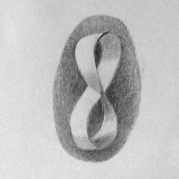
Мысленное путешествие по ней приводит к результатам, не менее загадочным, чем путешествия героев старинных легенд. Это небольшое замысловатое колечко обладает удивительными свойствами: у него одна поверхность и один край, хотя мы видим и осязаем две поверхности и два края. Разрешим сразу этот парадокс: мы видим и осязаем фрагмент ленты, ее небольшой отрезок. Здесь действительно, всё «нормально». Если же проследить путь точки (допустим, муравья) по ленте-то насекомое не заметит какой-либо разницы поверхностей, а также, ползя по краю ленты, ни разу не пересечет ее, чтобы перейти на другой край. Иными словами, ни другой поверхности, ни другого края не существует.
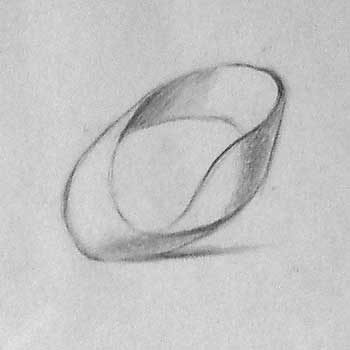
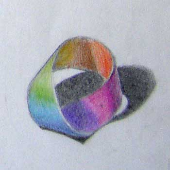
Я чувствую, читатель в нетерпении, какое отношение всё это имеет к числу восемь? Спешу ответить: самое прямое. Ведь загадочная фигура ленты Мёбиуса при взгляде «в профиль» имеет форму восьмерки. И это не только визуальное сходство. Положите восьмерку на бок — получится знак бесконечности. По этому знаку можете скользить без конца: здесь нет ни исходной, ни конечной точки; движение нигде не начинается и нигде не кончается. Не таково ли движение Времени и природа Пространства? И разве случайно песочные часы имеют форму восьмерки?
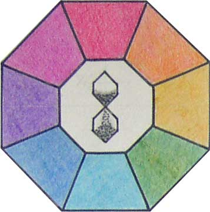
Есть у восьмерицы еще одно ценное свойство, благодаря которому её возлюбили восточные боги и мудрецы: это число четно-четное. Оно состоит из двух квартернеров (четвериц), а каждая четверица, в свою очередь — четное число. Сама конфигурация восьмерки дважды симметрична. В ней можно усмотреть верх и низ, небо и землю, правое и левое, мужское и женское. Космический процесс разделения Единого надвое повторяется во всяком живом организме, состоящем из клеток. Перед тем, как раздвоиться, клетка принимает форму восьмерки. Возникает вопрос: почему западная философия (в особенности та её часть, которая склонна к мистицизму), предпочитает нечетные числа, усматривая в них знаки Духа, Трансценденции, Абсолюта? «Неравные числа — божье наслаждение», свидетельствует Дионисий Фрейер (Парадоксальные эмблемы). Платон признает во всех вещах не только два начала, но ещё и третье как причину или связь этих двух. Среди пластических символов в культуре Запада самый трансцендентный — треугольник, поскольку он символизирует Святую Троицу. В почете также пятерица, седмица и девятка. Все нечетные числа первой десятки получили явное преимущество на Западе.
А на Востоке? Логически рассуждая, здесь всё должно быть не так, как на Западе. Ведь недаром сказано: «Как далеко восток от запада, так удалил Он от нас беззакония наши». (Пс. 102,12) Что касается четных чисел — то наше ожидание оправдывается.
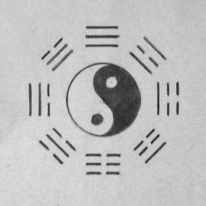
Взгляните на «Книгу книг» Древнего Китая — И цзин. Её эмблема — восьмиугольник, в котором размещены восемь гексаграмм по шесть черточек в каждой; центр занимает схема Ян — Инь — воплощенная двойственность, стремящаяся к единению, то есть к возврату в первоначальное состояние нераздельности начал. Основу «Книги перемен» составляют 64 (т.е. 8х8) гексаграммы. Чтобы не забыть это священное число, китайцы вывели породу тыквы, видом подобную восьмерке. Высушенная и пустая внутри тыква служила сосудом для воды или вина (которое китайские поэты предпочитали воде). Скользя взглядом (или рукой) по бесконечным изгибам-извивам тыквы, поэт подсознательно воспринимал идею вечного движения по кругу — от рождения к смерти и от смерти к воскресению, от жизни к небытию и от небытия к повторному рождению; от сотворения к гибели и обратно к сотворению. Процесс этот не имеет ни начала, ни конца.
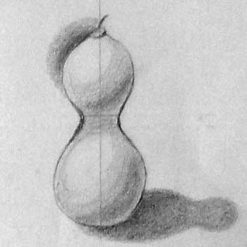
Кончен мой стих, не закончены думы, однако, — так выразил суть явления Сыкун Ту, поэт Старого Китая.
Идея вечного движения и возврата возникла в культуре древнейших народов; жива она и у современных «примитивных» племен. Обряды инициации у аборигенов Австралии, Новой Гвинеи, Африки и т.д. изображают ритуальную смерть посвящаемых и следующее за нею воскресение или новое рождение. В итоге посвятительных обрядов «главный жрец открывает неофитам тайну — за смертью всегда следует воскресение». (Элиаде М. Тайные общества и обряды инициации и посвящения) Живые постоянно чувствовали присутствие умерших предков, которые возвращались, чтобы принять непосредственное участие в жизни людей.
В ритуалах посвящения колесо бытия совершало полный круг, история племени зеркально отображала историю Мира, небесное опускалось на землю, а земное поднималось в небеса, чтобы снова опуститься на землю для приобщения следующего поколения к священной истории Мира, к духовной культуре. И этому движению не было конца, как и путешествию по ленте Мёбиуса (или по восьмерке).
В аборигенных культурах повсюду видим четность времени, пространства и человеческих дел. Первые слова членораздельного языка были, по-видимому, двойными: тамтам, пурпур, дзе- дзе, нула- нула, цеце, хуту- хуту… Всякое совершенство содержало в себе два симметричных начала: сутки — это день и ночь, год — зима и лето, человек — мужчина и женщина. Антропоморфные боги были двуполыми: Сурья, Кришна, Эрот, Зевс (имея вполне мужественную внешность, он был способен к деторождению). У многих аборигенных племен при инициациях девушки носят мужскую одежду, а мальчики — женскую; кроме того, у мальчиков вызывают кровотечение, чтобы уподобить их женщинам.
«В мифическом мышлении, — пишет М. Элиаде, — прежде, чем стать индивидуальным, необходимо стать тотальным. Двуполость воплощает тотальность, а, следовательно, — совершенство».
Особым уважением у древних народов пользовались близнецы. Их четность и симметрия были свидетельством необычных свойств, богоизбранности.
Четными числами размечена жизнь Будды и его бессмертные идеи. Уйдя из родного города, он просидел в лесу шесть лет, затем открыл четыре великие истины и благородный восьмеричный путь, ведущий к прекращению зла и страданий. Впоследствии символом буддизма стало «колесо Закона» с восемью спицами. В переводе на язык понятий это метафора безостановочного движения жизни, круговорота бытия…
В Тибетской Книге мертвых описаны восемь форм сознания, свойственных человеку. Их олицетворяют 8 бодхисаттв мужского пола и 8 — женского. Первые воплощают типы сознания, а вторые — объекты осознавания. Эти восемь пар кружатся в бесконечном танце, то сходясь, то расходясь, символизируя слияние противоположностей в сознании, расширенном до бесконечности. (Фримантл Ф. Сияющая пустота) Особенно наглядно это выражено в одной из тибетских икон, где в центре 8-лепесткового лотоса восседают божества Самантабхадра и Самантабхадри в тесном объятии.
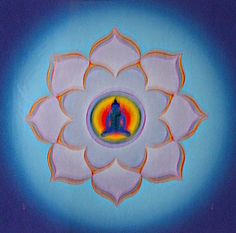
В Древнем Иране, стране Заратуштры, мир четко расчислен и организован по принципу дуализма. Главные числа здесь — четные, кратные двум. Создатели мира — два бога — Ормузд и Ариман, соответственно сияющий и темный, добрый и злой. Светлому Ормузду возносят молитвы, которые составляют книгу Ясн из 72 глав (72 = 8х9); гаты (песни) Заратуштры, пророка Ормузда, насчитывают 17 глав (корень этого числа — 8). Время и пространство также исчисляются четными числами: в году имеется четыре фиксированные точки положения Солнца на горизонте и соответственно четыре астрономические даты — летнее и зимнее солнцестояния, весеннее и осеннее равноденствия. На компасе отмечаются также промежуточные точки: СВ, ЮВ, ЮЗ и СЗ. Итак, насчитывается восемь сторон горизонта и соответственно восемь астрономических дат — прочная и вечная основа исчисления времени и структуры пространства на Земле. А ведь это Время создал великий Ахура-Мазда!
Так говорил Заратуштра…
Символика древних восьмиугольников и восьмиконечных звезд происходит от восьмичастной структуры земного пространства и времени. У шумеров, халдеев, индусов, египтян восьмиугольные эмблемы означают Землю или Солнце. Языческим богам (например, Перуну), посвящают 8 костров, на страже мира стоят 8 богов (Индия), календарные циклы состоят из восьми лет (Крит), у вавилонского бога Эйя, отца Мардука, 8 придатков на шапке, два лица и четыре юбки.
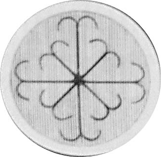
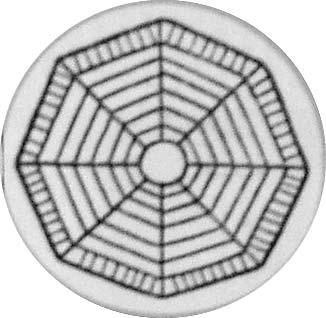
У мусульман 8-угольная звезда — символ царской династии Ахеменидов; в Каббале восьмая сефира обозначает Рок (по Эккартсгаузену); по У. Парфитту — великолепие, мышление, а также «Ход» — совершенный ум, правдивость, центр сознания.
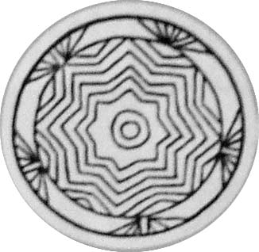
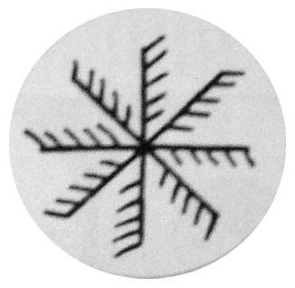
Суфии также почитают восьмерицу. «Восьмерка символизирует собой совершенство выразительности, восьмиугольник, и олицетворяет…кроме всего прочего, куб». (Идрис Шах. Суфизм)
Пожалуй, можно не продолжать приводить примеры значений восьмерицы в восточных культурах и священных книгах. Они весьма многочисленны, но все произрастают от одного корня (фигурально выражаясь), а именно, от космогонии и астрономии. Однако Космос с его идеальной симметрией и вечным возвратом к началам внушает мысль о тождестве парных категорий, в том числе о тождестве жизни и смерти. Вот здесь, думается, можем найти ответ на заданный выше вопрос о различном отношении Запада и Востока к четным числам. В четности — обещание смерти, так как смерть симметрична жизни. Восток не боится «прервать цепь рождений и смертей», то есть принять небытие как благо. Западные мыслители, напротив, готовы отвергнуть четность и симметрию как путь к смерти. Они предпочли «неравные числа, уводящие от жизненных проблем в мир Единого, Неразложимого, Бессмертного, Вечного».
Дионисий Фрейер изображает одну из своих парадоксальных эмблем в виде 8-лучевой фигуры (№ 117), сопровождая ее комментарием : «Такова тьма». На любом наречии понятие «тьма» негативно. Очевидно, симметрия и восьмеричность этой фигуры истолкованы как признаки зла.
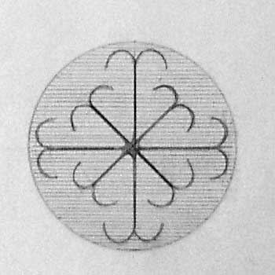
Наши современники не утратили чувства «ужаса перед симметрией», хотя наука ХХ века открыла антимиры во всех областях бытия от атома до космоса. Томас Манн, например, ощущает в симметричных снежинках «нечто зловещее, антиорганическое, враждебное жизни…жизнь содрогается перед лицом этой точности, этой абсолютной правильности, воспринимает ее как смертоносное начало, как тайну самой смерти» (Манн Т. Волшебная гора).
В рассказе Х.Л. Борхеса «Смерть и буссоль» повторяется мысль А. Кларка и Т. Манна об опасности симметричных конфигураций. Детективная история, описанная в рассказе Борхеса, происходит на фоне структурной сетки из ромбов, где симметрично не только пространство, но и время. Регулярные убийства происходят в четырех вершинах ромба, причем последнее убийство — в доме, построенном абсолютно симметрично. Самый вид этого дома внушил следователю тяжелые предчувствия. Он раскрыл тайну серии убийств, но за это заплатил собственной жизнью.
Колористика
Здесь, число восемь со всей его симметрией и безостановочным движением совершенно безобидно. Самая популярная и простая цветовая система — 8-ступенный цветовой круг. Он строится легко и просто — круг делится на восемь частей двумя крестами — прямым и косым; площади всех секторов равны. Остается только разместить цвета по секторам в спектральном порядке — и схема готова. Она немного похожа на изображения солнца и земли, но вместе с тем принципиально отличается от них. Главными осями симметрии в этом круге являются не вертикальная и горизонтальная, а оранжево- синяя и пурпурно-зеленая.
Первая ось — это диаметр, разделяющий круг на «теплую» и «холодную» половины, вторая (т.е. пурпурно-зеленый) делит круг на «активную» и «пассивную» половины (по терминологии Гете). Как и следовало ожидать, простота схемы не всегда обеспечивает ее точность. Для более точных и дифференцированных цветовых систем используются 24-ступенные круги (Оствальда, Рабкина), которые можно построить, разделив каждый сектор 8-ступенного круга на три части, соответствующие трем оттенкам каждого цвета. Затем из 24-ступенного круга можно таким же способом получить 72-ступенный. Изображая в красках этот круг, можно прочесть все главы Ясн, пользуясь цветовой схемой как четками — по одной главе на один сектор.
Такой круг был построен во Франции Шеврёйлем в конце ХVIII века. Вот на какие подвиги вдохновляет революционное время!
Ввиду всего сказанного я думаю, что на суде истории восьмерица была бы оправдана: ее четно-четная симметрия — это неотъемлемая составная часть порядка, равновесия, гармонии.
В заключение дадим слово академику Эстонской АН космологу Густаву Наану: «Симметрии, проявлениями которых являются постоянные законы, обеспечивают существование мира и возможность нашего существования». (Творчество №4, 1984г.)
Впервые статья была опубликована в журнале «Proдизайн»
На главную > Статьи > Двойной квартернер
Copyright © 2004—2008 Миронова Ленина Николаевна, Иванов Дмитрий Григорьевич